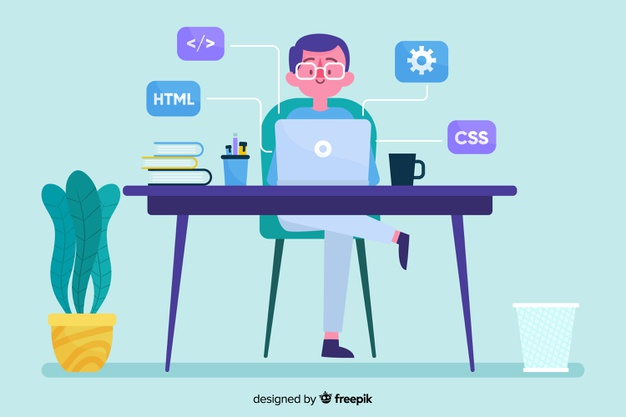

Principles of programming
Kiss:
Nobody in programming loves to debug, maintain, or make changes in complex code. “Keep It Simple, Stupid (KISS)“ states that most systems work best if they are kept simple rather than making it complex, so when you are writing code your solution should not be complicated that takes a lot of time and effort to understand.
Dry:
“Don’t Repeat Yourself (DRY)” principal goal is to reduce the repetition of code.. The opposite of the DRY principle is WET (“write everything twice” or “waste everyone’s time”) which breaks the DRY principle if you are writing the same logic at several places.
Yagni:
“You Aren’t Gonna Need It (YAGNI)” principle states that “don’t implement something until it is necessary” because in most of the cases you are not going to use that piece of code in future.
Law of demeter:
The Law of Demeter helps in maintaining independent classes and makes your code less coupled which is very important in software development to make your application flexible, stable, maintainable and understandable.